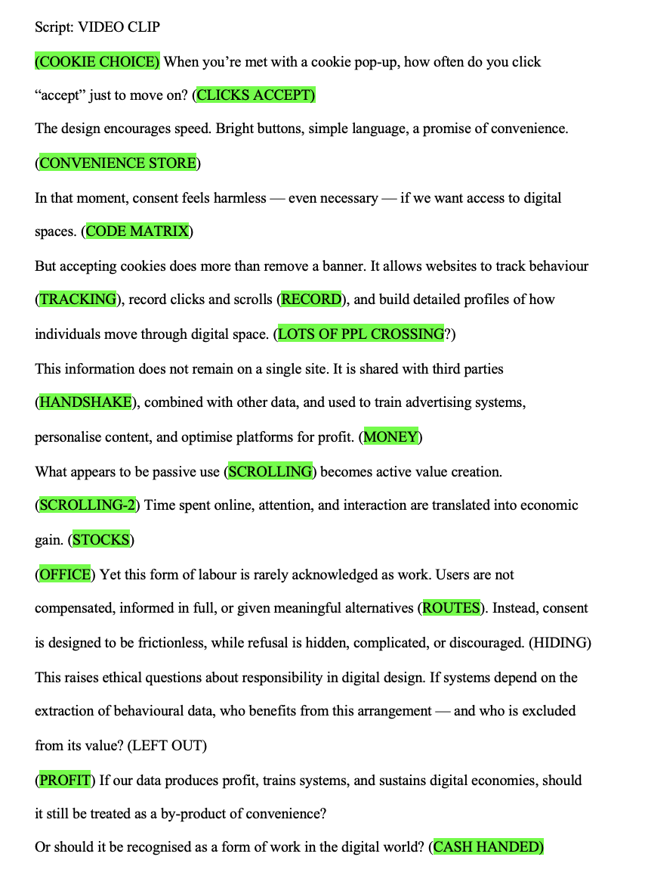

Production Planning
The inital steps i took in planning how i would go about producing my visual essay is by creating a script in a word document that detailed excatly what i wanted to say and the points i wanted to bring across in my video. From the earlier concept and ideation stages, i knew i had to address the following points:
- Unpaid work in the new digital era
- Time spent online scrolling and collecting cookies = data for companies to sell
- You are generating revenue for companies which you are NOT paid for
I set about constructing a script which addressed these three crucial points, (an extract of which is shown below), and planned to match free-source video clips with the spoken word content to best resonate with my audience. Highlighted in green are the words that would prompt a change in video clip.
